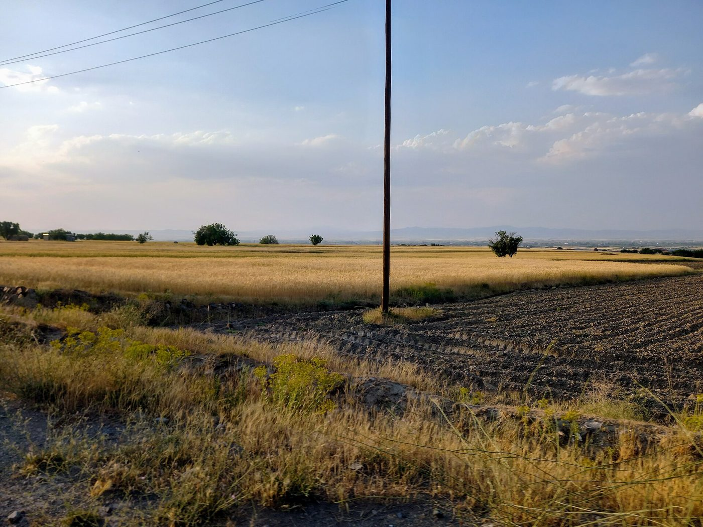
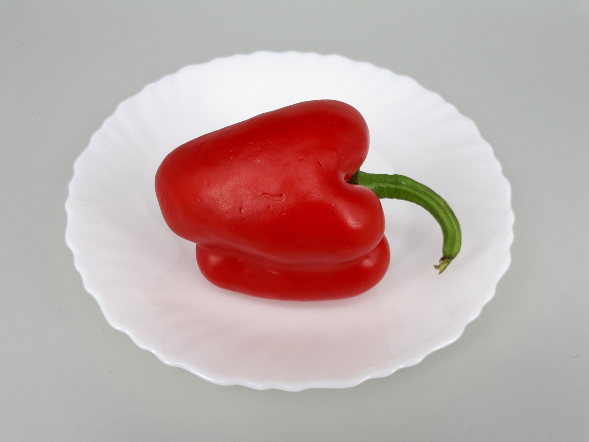
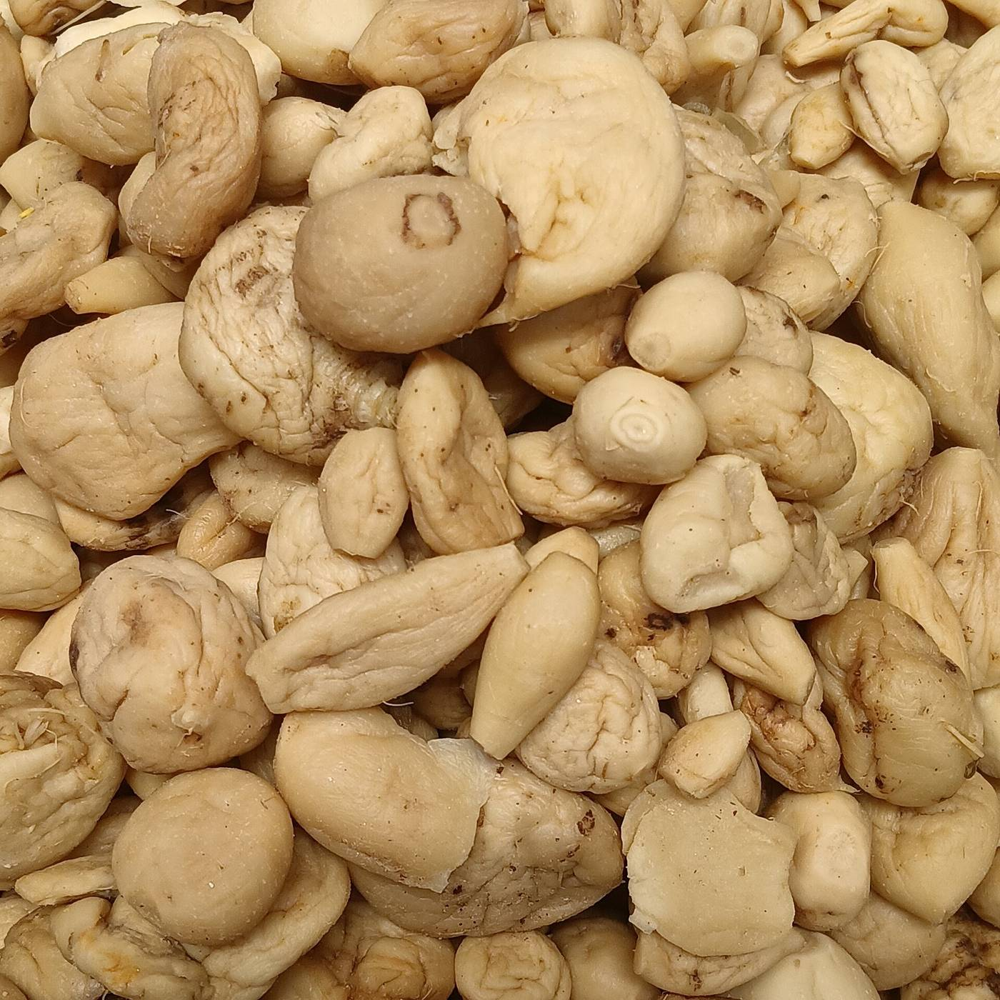
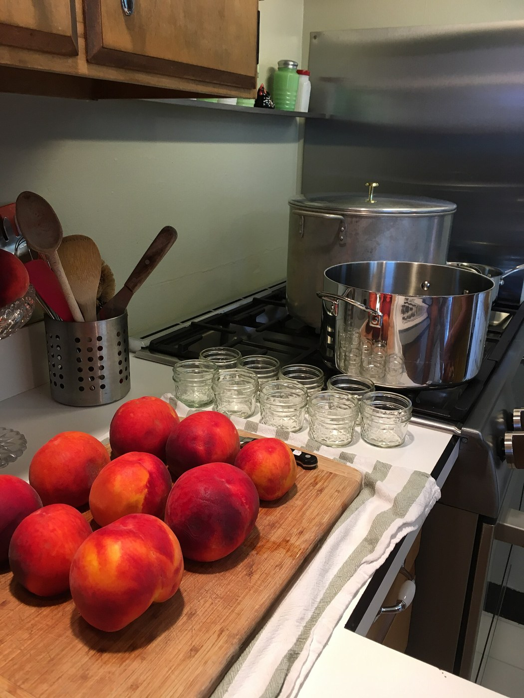

山梨県都留市田原・カフェ
心と体にやさしい、
発酵と野菜のごはん。
tobiraは、地元の野菜と発酵調味料、米粉と天然酵母のパンを楽しめる、小さなカフェです。
お店のこと
発酵のちからを、毎日のごはんに。
お店のInstagramのプロフィールでは、「心と体にやさしいカフェ」として紹介されています。地元の野菜、発酵調味料、米粉と天然酵母のパンが特徴で、「発酵ラボ」と題した発信や、マルシェへの出店のお知らせも見られます。
情報源: tobira Instagram
店名「tobira」の意味は確認できていません。このページの見出しの言い回しは制作側の表現です。
素材のイメージ
畑から、発酵、そしてパンへ。
写真は雰囲気を伝えるフリー素材です。お店で提供しているものそのものではありません。






メニュー
ランチ・お弁当・焼き菓子
Instagramの投稿やハイライトには、次のようなものが見られます。内容・価格・提供日は変わるため、詳細は準備中とし、最新情報はInstagramをご覧ください。

ランチ・お弁当
ランチやお弁当の紹介があります(写真はイメージ)。

パン
米粉と天然酵母のパンが特徴とされています(写真はイメージ)。

焼き菓子・季節のスイーツ
焼き菓子や季節のスイーツの投稿が見られます(写真はイメージ)。

発酵調味料
発酵調味料もお店の大切なテーマです(写真はイメージ)。
口コミ
お客様の声(イメージ例)
イメージ例
野菜の味がしっかり感じられて、食べたあとも体が軽い気がしました。
イメージ例
パンがやさしい味で、ゆっくり過ごせる時間でした。
イメージ例
発酵調味料のことを聞くのが楽しくて、また来たいと思いました。
上記は制作側が作成したイメージ例であり、実際のお客様の声ではありません。